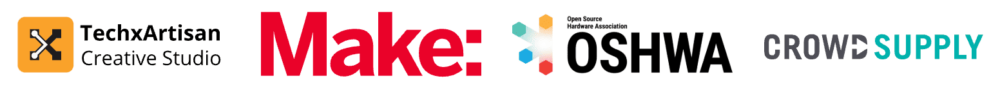

USB KVMの新しい機器、DIY時間の増加！
こんにちは、Openterfaceファミリー！
しばらくぶりです。新しいニュースを共有したいと思います！始まりましょう！
あなたのアンボクシング、私たちの最大のモチベーション
ますます多くのバッカーがキットを受け取り、アンボクシング、セットアップ、創造的なユースケースを共有しています。Discord、Reddit、Mastodon、Bluesky、Threads、Xなど、人気のプラットフォームでアンボクシングの投稿を見かけます！

正直に言えば、前の投稿でも言及しましたが、足りないと感じるほど感謝の気持ちが深いです。テックの最前線で私たちのガジェットがどのようにあなたを助けているかを見て、私たちの努力が何のためにあるのかを思い出させるのは、本当に名誉です。私たちのハードワークに対する最大の検証は、あなたのシェアとフィードバックです。
ありがとう、Openterfaceファミリー！ 🚀💙
バックログクリア、完全在庫
Crowd Supplyによると、ほとんどの注文が既に発送されています！まだ受け取っていない場合は、注文の出荷情報を確認し、処理中で間もなく到着するはずです。注文のステータスの更新については、Crowd Supplyに問い合わせしてください。
さらに、最近、Openterface Mini-KVMユニットの別のバッチを発送し、Crowd Supplyのテキサス倉庫は完全に在庫を補充しました！現在のMini-KVMがテックの最前線でヘッドレスデバイスを管理するために非常に価値があると感じている場合は、Crowd Supplyを通じて別のユニットを購入を考えてみてください。もしくは、テックを愛する友達に広めてください！
バグ？問題ない！デブチームがアクション
Reddit、Discord、GitHubでの話題がすごいです！あなたのフィードバック、質問、問題報告が流れ込んでいます。私たちはそれに感謝しています。
現在、私たちのデブチームが集中していること：
- バグ修正: あなたが報告した問題を修正中。
- あなたのサポート: あなたの体験をよりスムーズにするためにドキュメントとFAQを更新中。
私たちは、報告された問題をすべてレビューし、定期的なチェックインを行い、バグを一つずつ修正しています。アプリをより堅牢で信頼できるようにすることが、私たちのトップの優先事項です。
バグを報告したり、Mini-KVMを使用して救済の日を救った方法を見つけた場合は、大好きです！それは創造的なセットアップ、必要な機能アイデア、または純粋な興奮でも、私たちは全て耳を傾けています。
デブチームがバグを系統的に追跡し（そして彼らの理性を保つために）、私たちは強くお勧めします。まずは、私たちのGitHubリポジトリに報告してください：
- Openterface QT for Windows & Linux
- Openterface MacOS
- Openterface Android
- Openterface Mini-KVM Hardware
デブチームとのリアルタイムのディスカッションや、Openterfaceファンの他のコミュニティメンバーとのディスカッションを好む場合は、以下に参加してください：
- Reddit: r/Openterface_miniKVM
- Discord: Openterface
古いスタイルを好む場合は、いつでもメールをinfo@techxartisan.comに送るか、Google Formを通じてメッセージを送ることができます。
私たちは、道中のどんなのんびりも乗り越えるためのあなたの忍耐とサポートに感謝しています。問題を報告し、アイデアを共有し、コードを貢献するまでに至ったすべての人に感謝します！Openterfaceデバイスは完璧ではありません（まだ！）が、このコミュニティのエネルギーのおかげで、毎日より良くなっています。 🚀💙
DIY KVMチャレンジ：延長と賞品アップグレード！
キットが予定より遅れて発送されたため、DIY KVMチャレンジを二ヶ月延長します！さらに、賞品をアップグレードします。詳細はCrowd Supplyのコンテストページで発表します。つまり、より多くの時間を実験、展示するための時間が増えます。Crowd SupplyのUSB DIYコンテストページでプロジェクトを提出してください： USB KVM DIYチャレンジ2024


新しい明るいオレンジナイロンケーブル
最新のMini-KVMバッチで、ツールキットバージョンのType-Cケーブルを新しい明るいオレンジナイロンケーブルにアップグレードしました。この新しいケーブルは視覚的に際立つだけでなく、EMI抵抗が優れているため、データ転送が安定し、耐久性が異常です。

しかし、オリジナルのシリコンのようなType-Cケーブルの柔らかく、より柔軟な感じが好きな場合は、問題ありません！TxA Shopから購入できます。両方のケーブルは強みがあり、私たちは新しいナイロン版がテックツールキットに固有の追加になると確信しています。
シームレスなコントロール：Mini-KVM + Android Pencil = 純粋な魔法
Mini-KVMとAndroid Pencilをペアリングすることで何が起こるかを想像してみませんか？純粋な魔法！macOSやWindowのスケッチデザインからナビゲーションまで、私たちのOpoenterface Androidホストアプリの体験はスムーズで、直感的で、満足のいくものです。デモビデオをチェックして、実際に動作を見てください！
コミュニティからのすばらしいユースケース：
Openterface Mini-KVMを使用するためのいくつかのアイデア：
- ヘッドレス制御とAndroidフォン: My Pi 5 setup: UPS, Aluminium Case, & Openterface Magic
- 壊れたMacBookの復元: Uh... A way to save the day of this pink screen!
- もっと多くのユースケースをウェブサイトで探してください。
あなたの創造性と情熱がOpenterfaceコミュニティの心です。
その間、Openterfaceデバイスとシームレスに動作するように設計された高品質のケーブルやOpenterfaceマーチを購入するために、TechxArtisan Shopを探索してください。
それでは…ハッピーな作業を！
感謝を込めて、
Billy Wang
プロダクトマネージャー
Openterfaceチーム | TechxArtisan
 私たちはフットウェアが大好きで、ほとんど毎日着ています！😉 この素晴らしい写真を共有してくださり、Davidに感謝します。本当に感謝しています！🎉
私たちはフットウェアが大好きで、ほとんど毎日着ています！😉 この素晴らしい写真を共有してくださり、Davidに感謝します。本当に感謝しています！🎉


 UKCAとCEの要件は、私たちの電子製品にとって同じであり、CEはRoHSの準拠もカバーしています。
UKCAとCEの要件は、私たちの電子製品にとって同じであり、CEはRoHSの準拠もカバーしています。 ケビンとショーンが、オレンジケーブルがOpenterface Mini-KVMと適切に動作することを確認するためのテスト方法を説明していました。
ケビンとショーンが、オレンジケーブルがOpenterface Mini-KVMと適切に動作することを確認するためのテスト方法を説明していました。 TechxArtisanのロゴが誇らしげに刻まれたHDMIケーブル、短いType-Cケーブル、VGA-to-HDMIケーブルのサンプルです。
TechxArtisanのロゴが誇らしげに刻まれたHDMIケーブル、短いType-Cケーブル、VGA-to-HDMIケーブルのサンプルです。 VCC、GND、Target D+、Target D-、Host D+、Host D-ピン—‘D’はUSBデータを意味します。
VCC、GND、Target D+、Target D-、Host D+、Host D-ピン—‘D’はUSBデータを意味します。